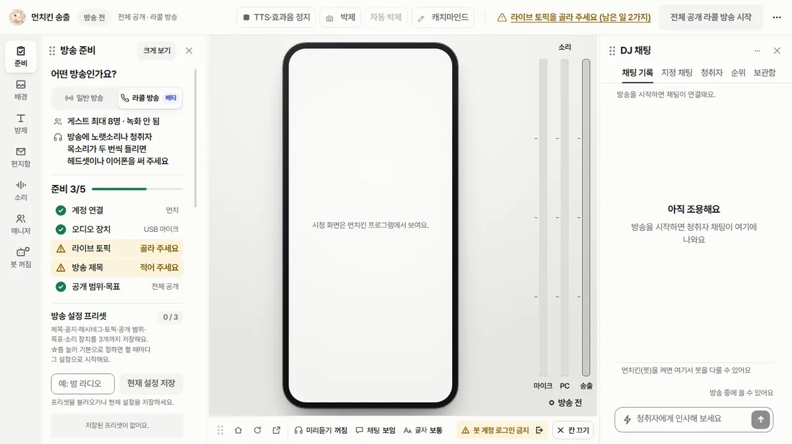
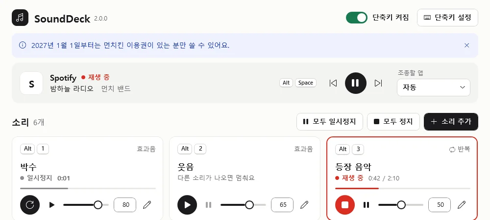

먼치킨 이용권에 함께 드리는 무료 덤
유용한 도구
방송할 때 필요한 도구, 먼치킨이 함께 드려요.
먼치킨 이용요금과 별개로 드리는 1+1 이에요.

PC 방송
먼치킨 송출
앱플레이어 없이 PC에서 바로 스푼 방송을 켜요.
- 마이크와 PC 소리를 함께 보내요
- 방송 제목·공지·해시태그를 정하고, 자주 쓰는 설정은 프리셋으로 저장해요
- 배경 바꾸기, 캐치마인드, 후원 순간 자동 박제를 써요
- 라콜 방송과 내 목소리 에코도 있어요(베타)
받는 법
먼치킨을 받아 켠 뒤, 위쪽 [송출(PC 방송)]을 누르면 열려요.
처음 한 번 스푼 계정으로 로그인하고 소리 엔진을 받아요.
꼭 알아 두세요
먼치킨 송출은 스푼(Spoon)이 승인한 프로그램이 아니에요. 스푼 웹 로그인 방식이라 스푼 공식 API 기능도 아니에요.
스푼의 요청이나 조치에 따라 언제든 멈출 수 있어요.
스푼의 요청으로 멈춰야 하면, 멈추기 전에 전체 이용자에게 먼저 알려 드릴게요.
그 전까지는 안심하고 쓰셔도 돼요.

효과음판
SoundDeck
단축키 한 번으로 효과음과 배경 음악을 틀어요.
- 소리를 넣으면 Alt + 1 ~ Alt + 0 단축키가 저절로 붙어요(10개까지)
- 다른 프로그램을 보고 있어도 단축키로 소리가 나와요
- 효과음은 한 번, 반복은 배경 음악처럼 계속 나와요
- Alt + Space 로 Spotify·유튜브 같은 음악 앱을 멈추고 틀어요
- 단축키는 [단축키 설정]에서 내 마음대로 바꿔요
받는 법
zip 파일을 받아 압축을 풀고, SoundDeck 폴더 안 SoundDeck.exe를 켜요. 설치는 없어요.
지금은 누구나 무료로 써요. 2027년 1월 1일부터는 먼치킨 이용권이 있어야 써요.
켤 때 파란 경고 창이 나오면
SoundDeck 은 아직 마이크로소프트 서명을 받지 않아서, 처음 켤 때 윈도우가 "Windows의 PC 보호" 창을 띄울 수 있어요.
- 글 아래 "추가 정보"를 눌러요. 처음에는 "실행" 단추가 안 보여요.
- "실행"을 눌러요. 게시자가 "알 수 없는 게시자"로 나와도 괜찮아요. 앱 이름이 SoundDeck.exe 인지만 확인해 주세요.
먼치킨.com 에서 받은 파일만 이렇게 열어 주세요. 이 창은 처음 한 번만 나와요.
유용한 도구 이용 안내
유용한 도구를 쓰기 전에 꼭 확인해 주세요.
- 유용한 도구는 먼치킨 이용요금과 별개로 드리는 무료 덤(1+1)이에요. 먼치킨 이용권 값에는 유용한 도구 값이 들어 있지 않아요.
- 2026년 12월 31일까지는 누구나 무료로 써요. 2027년 1월 1일부터는 먼치킨 이용권(먼치킨만·먼치킨 + 추억앨범)이 있는 분께 드려요.
- 회사 사정이나 제휴처·외부 서비스(스푼 등)의 정책에 따라 도구의 내용이 바뀌거나 멈출 수 있어요.
- 무료 덤이라 바뀌거나 멈춰도 따로 보상하거나 이용권 값을 돌려 드리지 않아요. 먼치킨 이용권의 철회·환불은 이용약관 그대로예요.
- 먼치킨 송출은 스푼(Spoon)이 승인한 프로그램이 아니에요. 스푼의 요청이나 조치에 따라 언제든 멈출 수 있어요. 스푼의 요청으로 멈춰야 하면 멈추기 전에 전체 이용자에게 먼저 알려 드려요. 스푼의 조치로 미리 알릴 틈 없이 멈추게 되면, 멈춘 뒤 바로 알려 드려요.
- 자세한 내용은 이용약관(새 창) 3·4·10번에 있어요.
멈춰야 할 일이 생기면 먼저 알려 드릴게요. 그 전까지는 안심하고 쓰세요.